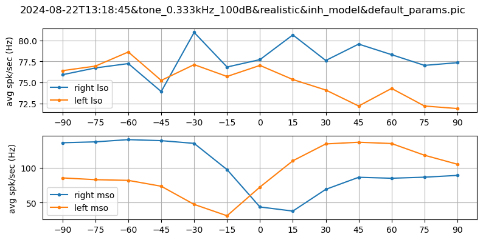
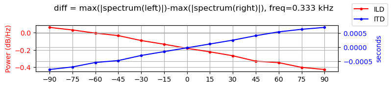
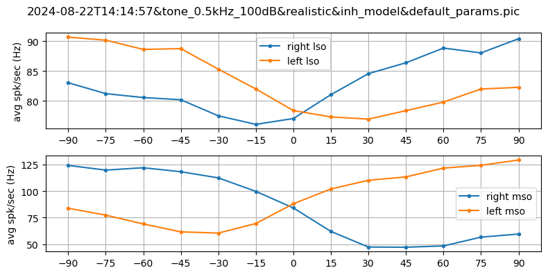
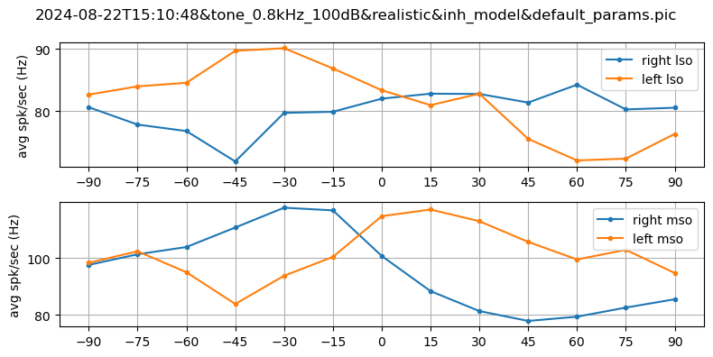
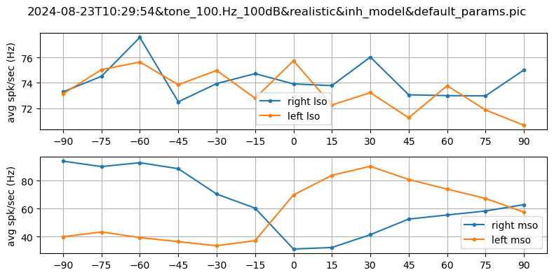
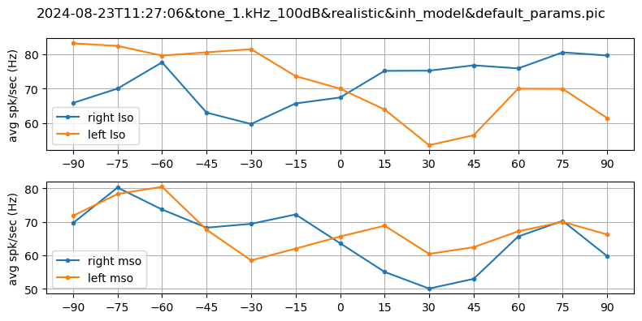
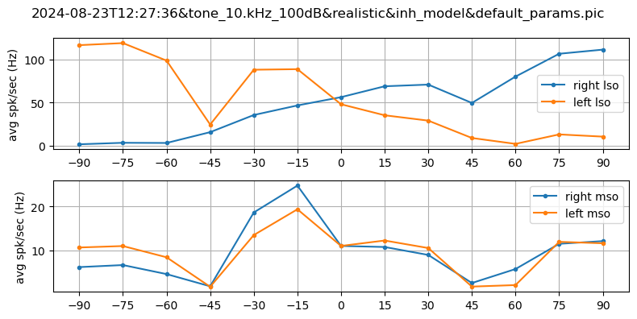

what to show
SHOW_RATE_VS_ANGLE_LSO = True
SHOW_RATE_VS_ANGLE_MSO = True
SHOW_ITD_ILD = True
SHOW_ADDITIONAL_STATS = False
SHOW_PARAMS = Falsethese are the results for frequencies [100, 330, 500, 800, 1000, 10000] * Hz. all other parameters are kept the same. refractory period was kept as 1ms. using HRTF nonno!
SHOW_RATE_VS_ANGLE_LSO = True
SHOW_RATE_VS_ANGLE_MSO = True
SHOW_ITD_ILD = True
SHOW_ADDITIONAL_STATS = False
SHOW_PARAMS = False%load_ext autoreload
%autoreload 2
import dill
import numpy as np
import matplotlib.pyplot as plt
import os
from pathlib import Path
from os import listdir
from os.path import isfile, join
from sorcery import dict_of
import pprint
import IPython
import consts as C
from utils.log import logger
from cochleas.RealisticCochlea import run_hrtf
from analyze import sound_analysis as SA
from utils.custom_sounds import Tone
import logging2024-08-23 19:26:12,961 [INFO ]
>>>>> start execution# scan results folder, default values for figures
# only show results from this "frozen" folder
results_dir = Path(IPython.extract_module_locals()[1]["__vsc_ipynb_file__"]).parent
files = [
f
for f in listdir(results_dir)
if isfile(join(results_dir, f)) and f.endswith(".pic")
]
files.sort()
selected_files = []
ax = None
plt.rcParams["axes.grid"] = True
plt.rcParams["figure.figsize"] = (6, 3)def draw_rate_vs_angle(data, filename, show_lso=True, show_mso=True):
angle_to_rate = data["angle_to_rate"]
name = data["conf"]["model_desc"]["name"]
sound_key = data["conf"]["sound_key"]
# cochlea = data["conf"]["cochlea_type"]
angles = list(angle_to_rate.keys())
def average_firing_rate(x):
active_neurons = set(x['senders'])
return (
(len(x["times"]) / len(active_neurons)) if len(active_neurons) >= 0 else 0
)
arr_n_spikes_r_lso = [
average_firing_rate(x["R"]["LSO"]) for angle, x in angle_to_rate.items()
]
arr_n_spikes_l_lso = [
average_firing_rate(x["L"]["LSO"]) for angle, x in angle_to_rate.items()
]
arr_n_spikes_r_mso = [
average_firing_rate(x["R"]["MSO"]) for angle, x in angle_to_rate.items()
]
arr_n_spikes_l_mso = [
average_firing_rate(x["L"]["MSO"]) for angle, x in angle_to_rate.items()
]
lso = {
"spikes": [arr_n_spikes_r_lso, arr_n_spikes_l_lso],
"show": show_lso,
"label": "lso",
}
mso = {
"spikes": [arr_n_spikes_r_mso, arr_n_spikes_l_mso],
"show": show_mso,
"label": "mso",
}
data = []
for i in [lso, mso]:
if i["show"]:
data.append(i)
num_subplots = len(data)
fig, ax = plt.subplots(num_subplots, figsize=(8, 2 * num_subplots))
if type(ax) is not np.ndarray:
ax = [ax]
for axis, d in zip(ax, data):
axis.plot(angles, d["spikes"][0], ".-", label=f"right {d["label"]}")
axis.plot(angles, d["spikes"][1], ".-", label=f"left {d["label"]}")
axis.set_ylabel("avg spk/sec (Hz)")
_ = axis.legend()
# fig.suptitle(f"{name} with {sound_key}")
plt.suptitle(filename)
plt.setp([ax], xticks=angles)
plt.tight_layout()
plt.show()
return fig
def draw_ITD_ILD(data, selected):
previous_level = logger.level
# itd and ild functions are VERY verbose
logger.setLevel(logging.WARNING)
tone: Tone = data["basesound"]
angle_to_ild = {}
angle_to_itd = {}
angles = list(data["angle_to_rate"].keys())
for angle in angles:
binaural_sound = run_hrtf(
tone,
angle,
data["conf"]["parameters"]["cochlea"]["realistic"]["subj_number"],
)
left = binaural_sound.left
right = binaural_sound.right
angle_to_itd[angle] = SA.itd(left, right)
ild_res, all_freq_diff = SA.ild(left, right, tone.sound)
angle_to_ild[angle] = ild_res
# total_diff = np.sum(all_freq_diff)
fig, ild = plt.subplots(1, sharex=True, figsize=(8, 1.8))
fig.suptitle(
f"diff = max(|spectrum(left)|)-max(|spectrum(right)|), freq={tone.frequency}"
)
ild.set_ylabel("Power (dB/Hz)", color="r")
ild.plot(
angles,
[angle_to_ild[angle] for angle in angles],
label="ILD",
marker=".",
color="r",
)
ild.tick_params(axis="y", labelcolor="r")
itd = ild.twinx()
itd.set_ylabel("seconds", color="b")
itd.plot(
angles,
[angle_to_itd[angle] for angle in angles],
label="ITD",
marker=".",
color="b",
)
itd.tick_params(axis="y", labelcolor="b")
_ = fig.legend()
fig.tight_layout()
# plt.subplots_adjust(hspace=0.6, wspace=1)
plt.setp([ild, itd], xticks=angles)
plt.show()
logger.setLevel(previous_level)
return fig
def show_stats(data):
total_spikes_R_LSO = sum(
[len(x["R"]["LSO"]["times"]) for angle, x in data["angle_to_rate"].items()]
)
total_spikes_L_LSO = sum(
[len(x["L"]["LSO"]["times"]) for angle, x in data["angle_to_rate"].items()]
)
total_spikes_R_MSO = sum(
[len(x["R"]["MSO"]["times"]) for angle, x in data["angle_to_rate"].items()]
)
total_spikes_L_MSO = sum(
[len(x["L"]["MSO"]["times"]) for angle, x in data["angle_to_rate"].items()]
)
print(
dict_of(
total_spikes_R_LSO,
total_spikes_L_LSO,
total_spikes_R_MSO,
total_spikes_L_MSO,
)
)
def show_selected_info(selected):
with open(join(results_dir, selected), "rb") as f:
res = dill.load(f, ignore=True)
print(
f"""\
name : {res['conf']['model_desc']['name']}
sndkey: {res['conf']['sound_key']}
coctyp: {res['conf']['cochlea_type']}
params: {pprint.pformat(res['conf']['parameters'], width=10, sort_dicts=False)}"""
)Parameters are the same for all these results, the only thing that changes is the frequency of the tone. Here are all parameters, followed by graphs for all frequencies. Sorry that they aren’t ordered.
with open(join(results_dir,files[1]), 'rb') as f:
res = dill.load(f, ignore=True)
show_selected_info(files[1])
for selected in files:
with open(join(results_dir, selected), "rb") as f:
res = dill.load(f, ignore=True)
if SHOW_RATE_VS_ANGLE_LSO or SHOW_RATE_VS_ANGLE_MSO:
draw_rate_vs_angle(res, selected, SHOW_RATE_VS_ANGLE_LSO, SHOW_RATE_VS_ANGLE_MSO)
if SHOW_ITD_ILD:
draw_ITD_ILD(res, selected)
if SHOW_ADDITIONAL_STATS:
show_stats(res)
if SHOW_PARAMS:
show_selected_info(selected) name : Inhibitory model, mso iaf_cond_beta
sndkey: tone_0.5kHz_100dB
coctyp: realistic
params: {'key': 'default_params',
'cochlea': {'realistic': {'subj_number': 0,
'noise_factor': 0.2,
'refractory_period': 1},
'ppg': {}},
'n_ANFs': 35000,
'SBCs2MSOs': 5,
'SBCs2LSOs': 5,
'n_SBCs': 8750,
'n_GBCs': 1750,
'n_MSOs': 1750,
'n_inhMSOs': 1750,
'V_m': -70,
'V_reset': -70,
'C_m_sbc': 1,
'C_m_gcb': 1,
'cap_nuclei': 1,
'C_mso': 1,
'CONFIG': {'STORE_POPS': {'ANF',
'GBC',
'LSO',
'MNTBC',
'MSO',
'SBC'},
'NEST_KERNEL_PARAMS': {'resolution': 0.1,
'rng_seed': 42}},
'DELAYS': {'GBCs2MNTBCs': 0.45,
'SBCs2MSO_exc_ipsi': 1,
'SBCs2MSO_inh_ipsi': 1.3,
'SBCs2MSO_exc_contra': 1,
'MNTBCs2MSO_inh_contra': 0.44,
'LNTBCs2MSO_inh_ipsi': 1.3},
'SYN_WEIGHTS': {'ANFs2SBCs': 16.0,
'ANFs2GBCs': 8.0,
'SBCs2MSO': 1,
'SBCs2MSO_inh': -30,
'SBCs2LSO': 8.0,
'MNTBCs2MSO': -30,
'GBCs2MNTBCs': 16.0,
'MNTBCs2LSO': -2.0},
'POP_CONN': {'ANFs2SBCs': 4,
'ANFs2GBCs': 20},
'MSO_TAUS': {'rise_ex': 0.2,
'rise_in': 0.1,
'decay_ex': 0.5,
'decay_in': 0.1}}









